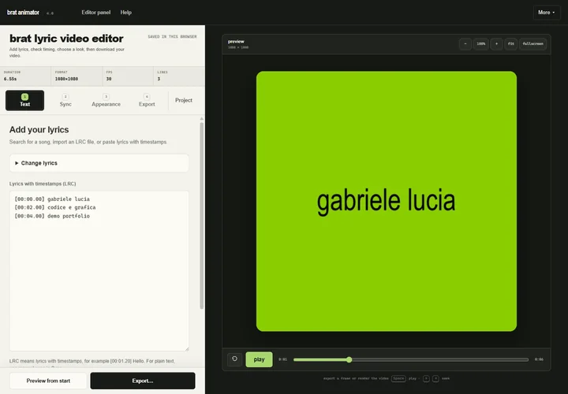
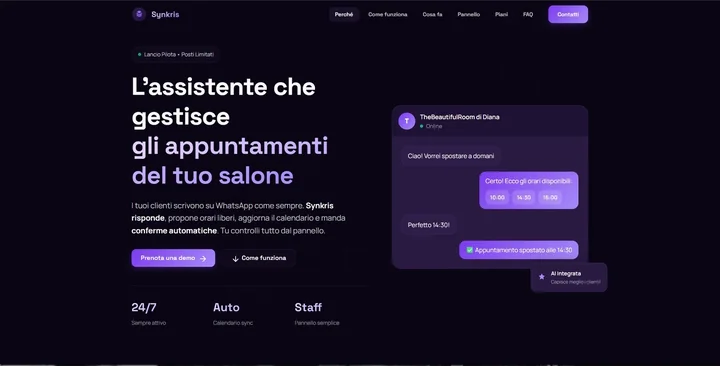
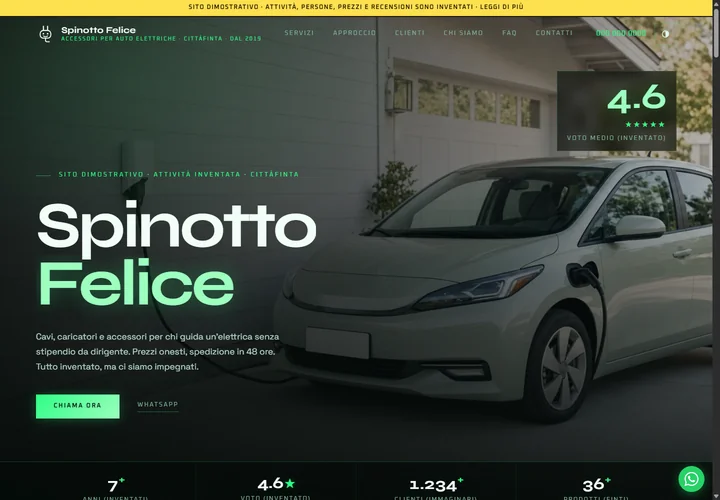

Sviluppo web
Siti e applicazioni web, dal primo schizzo alla pubblicazione.
- HTML · CSS · JavaScript
- SEO e pubblicazione
- Pagine social aziendali
Faccio siti, software e grafica. Di solito funzionano al primo colpo. Di solito. Gabriele Lucia, Sassuolo. Studio Ingegneria Informatica a UNIMORE.
Ho iniziato per curiosità e sono rimasto per i problemi. Mi piace capire cosa non funziona, sistemarlo e far finta che fosse facile. Codice e grafica, per me, sono lo stesso lavoro visto da due lati.
Un editor creativo, un assistente su WhatsApp, un gestionale e un sito vetrina. Problemi diversi, stessa testardaggine.



Scuola, clienti veri, un Erasmus a Siviglia, macchine industriali. Adesso l’università.
Siti e applicazioni web, dal primo schizzo alla pubblicazione.
Server, database, automazioni. Se funziona, nessuno se ne accorge.
Interfacce e contenuti per i social. Il motivo per cui il codice, poi, si guarda volentieri.
Quattro repository fuori dai casi studio: un agente locale, un gateway AI, un po’ di reverse engineering e un Hackintosh.
Ogni commit di questo repository, giorno per giorno, in diretta da GitHub. Sì, alcuni giorni ho esagerato.
271